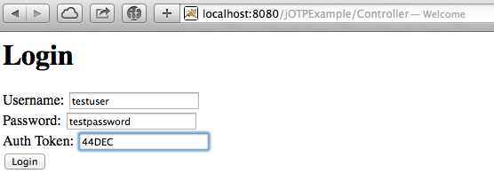
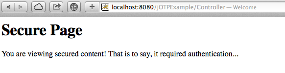

OWASP jOTP Demo
IMPORTANT: These instructions are only applicable for 1.x versions of jOTP. Later major versions use a different API and are configured differently.
OWASP jOTP is a one-time-use password token service. For an overview of this application, see the OWASP jOTP Overview. Below is a quick walkthrough for setting up jOTP and a sample app that uses it as part of its authentication backend.
What You Will Need
- A local installation of Apache Tomcat. You will need to have a working knowledge of how to install WAR files and start/stop applications on the server.
- The jOTP source code.
- The source code for the example application.
Setting up jOTP
Grab the jOTP code from GitHub. You can do this by either downloading the ZIP file or by cloning the repository. Once you have unpacked the code locally, build the WAR file by running the gradlew command in the source folder:
On Linux/UNIX/Mac:
./gradlew build
On Windows:
gradlew build
Gradle will build the WAR and place it in the build/lib folder.
Before starting the jOTP application, it will need to be configured. To do this, create a file called, config.yaml and place it in a folder called, .jotp in your home folder. Copy the following configuration into the file, substituting your own EMAIL ADDRESS, EMAIL USERNAME, and EMAIL PASSWORD. This configuration will tell jOTP how to treat incoming requests for tokens, and how to send them to recipients. See the comments for details.
# SMTP server settings
# In this case, our app will just use a Gmail account
SmtpHost: smtp.gmail.com
SmtpPort: 587
SmtpFrom: <EMAIL ADDRESS>
# SMTP account settings
SmtpAuthType: password
SmtpUsername: <EMAIL USERNAME - often the same as the EMAIL ADDRESS>
SmtpPassword: <EMAIL PASSWORD>
# Use a local in-memory tokenstore
TokenstoreType: local
# Mobile providers to try when sending tokens
# In this case, I'll assume that all recipients will be using either
# AT&T or Verizon
MobileProviderHosts:
- vtext.com
- txt.att.net
# We configure our application credentials here
# In this case, our app will use username "mygroup" and password
# "mypass". The OTP tokens will be 5 characters in length and
# tokens will expire 90 seconds after being generated.
Clients:
- Name: mygroup
Password: mypass
MinOtpLength: 5
MaxOtpLength: 5
TokenLifetime: 90
Finally, install the jOTP WAR file you built earlier on your Tomcat instance. Make sure you rename the WAR file to be "jOTP" to ensure that the context root is "jOTP" (this is what the test application is expecting.) When you start the server, you should be able to access the /sys/monitor endpoint (eg. at http://localhost:8080/jOTP/sys/monitor) to verify that jOTP is running. If it started successfully, you should see the following JSON response in your browser:
{"error":"", "status":"OK"}
Setting up the Example Application
Download the sample application code and extract the ZIP file. Find the ControllerServlet.java file and open it in a text editor. Find the line where the phone number field is assigned and set this to your own cell phone number:
private static final String TEST_USER_PHONE_NUMBER = "<PHONE NUMBER>";
Once this has been updated, navigate to the root level of the project directory (ie. where the build.gradle file is.) Build the WAR file by running the gradlew command.
Install this WAR file on Tomcat. If you see the welcome page when you navigate your browser to /jOTPExample/Controller, the app has been installed successfully.
TIP: Explore the code and comments in ControllerServlet.java. While the code is simple and not meant to be imitated by production applications, it will provide an overview of how web applications can interact with jOTP.
Walking through the Example Application
First, the point your browser at the application's welcome page. For me, this is "http://localhost:8080/jOTPExample/Controller".
Enter the example user's name. In this case, it's "testuser". Once the "Generate Token" button is pressed, the application will request a token for "testuser" be sent via text message by jOTP.

The following page will prompt you to enter the password ("testpassword"), as well as the token from jOTP. Once this token is received, it can be entered in the web form.


Assuming the time elapsed between when the token was generated and when it was entered into the second login form hasn't exceeded the maximum time in the jOTP configuration, the you will be logged in successfully.

If the token was invalid (entered incorrectly or expired), the you will reach the invalid credentials page: